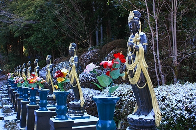

玉桂寺/滋賀県甲賀市
信楽高原鉄道の終点は陶器で有名な信楽駅。の一個手前の玉桂寺前駅はこんな感じ。
見事な超ローカル駅である。
えっ？どこから撮ってるかって？
…それはぶら〜りぶら〜り揺れる吊橋からだよ…
で、その吊橋を渡ると駅の名前にもなっている玉桂寺に着く。
何だか門前から窺うだけでもアグレッシブオーラがビンビン放出されてるような気がするんですけど…
ああ〜！こんなか〜！

ひな壇に並ぶ大量の水子地蔵と風車、玉桂寺一願成就大不動明王と染め抜かれた赤いノボリ、そしてその上にそびえ立つ恐ろしい顔の不動明王像。
うっすらと積もった雪を溶かしきって蒸発させてしまいそうな真っ赤っ赤世界が展開されている。
後のファイヤーパターンと躯体の緑色が補色なもんで見ていると目がチカチカしてきます…
この不動明王、高さは10メートル程か。台座が高いので立派に見える。
実はこの不動サマと全く同じ形の不動サマを何体か知ってます…
写真で確認したらファイヤーパターンまで全く同じだったので、同じ型から鋳造された不動兄弟なんでしょうねえ。
お寺のサイトを見たらも少しくすんだ色だったので近年塗り替えたと思われる。
後ろから見るとこんな感じ。

青い空を突き破るようなファイヤーとノボリ。
でも意外とのっぺりしてました。
ひっそりとした山中に広がる毒々しいまでのビビッドな人工色の花畑。
正直こんなひっそりとした場所にこんなアグレッシブなお寺があるとは予想外だった。
地蔵の一体一体が発する激しい自己主張は単に色彩だけでなく、その後に隠された何らかのメッセージを発しているようにすら思えた。
お地蔵さんの台座にはそれぞれナンバリングがしてありました。5000番台ですよ…
さて先に進もう。
弘法大師お手植えと伝えられる高野槙の前にはこんなお方が。
紅白のめでたい観音サマ。
頭の上からは水を噴射しております。
何故かミリタリーっぽい色の観音サマがズラリと。
こちらにもずらりと並んだ鋳造製の観音サマ。

台座に戒名や俗名が書かれているので納骨堂になっているのかもしれない。
どうもここのお寺は色彩センスがぶっ飛んでるようだ。
境内の奥のほうにあったお堂を覗いてみると…
おお！
チョット盛り盛り度が足りないけどアフロ佛じゃん。
情報提供は林輝彦さんです
2009.01.
珍寺大道場 HOME